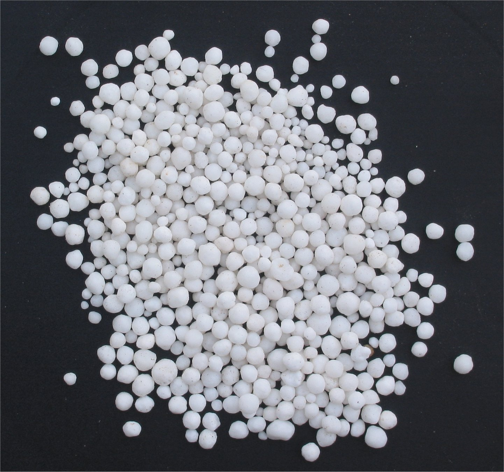

Cause
 Urine from cows has a high concentration of nitrates from the grass which they eat as farmers use nitrate fertilisers to make the grass grow faster. As cow paddocks are close to rivers and streams urine from the cows leak into them from the ground or cows in unfenced paddocks swim and urinate in them. The nitrogen causes toxic algae to grow in the rivers making them unsafe for people to swim in and drink. This is a problem as the selwyn river is affected and people swim in the river.
Urine from cows has a high concentration of nitrates from the grass which they eat as farmers use nitrate fertilisers to make the grass grow faster. As cow paddocks are close to rivers and streams urine from the cows leak into them from the ground or cows in unfenced paddocks swim and urinate in them. The nitrogen causes toxic algae to grow in the rivers making them unsafe for people to swim in and drink. This is a problem as the selwyn river is affected and people swim in the river.
What Is Being Done
 Organisations such as Living Water help protect New Zealand waters through projects. Living
Water is Fonterra and DOC, Department of Conservation, working together to help rivers and
farmers thrive while reducing harmful effects on the environment. Examples of projects which they
are doing are creating water purifiers by lakes, restoring the Selwyn river, and stopping companies
from ruining the environment when building structures.
Organisations such as Living Water help protect New Zealand waters through projects. Living
Water is Fonterra and DOC, Department of Conservation, working together to help rivers and
farmers thrive while reducing harmful effects on the environment. Examples of projects which they
are doing are creating water purifiers by lakes, restoring the Selwyn river, and stopping companies
from ruining the environment when building structures.
Nitrates

Nitrates are a compound of nitrogen and oxygen used for fertilising plants, nitrogen is a nutrient which is essential for plant growth. When cows eat grass which has been fertilised by Nitrates their urine is nitrate-rich. When cows urinate their urine seeps into the ground and go into rivers or underground water supplies, contaminating the water. Nitrates which are not absorbed by plants also end up running off into rivers contaminating them.
Nitrates are harmful to humans because when present in blood it can turn haemoglobin, an iron-based compound which carries oxygen in the blood, into methemoglobin. Methemoglobin cannot carry oxygen. Enzymes in the blood usually turn methemoglobin back into haemoglobin, lowering the amount of methemoglobin in the blood. The amount of methemoglobin in the blood for adults is usually around 1% and 1%-2% for babies. When methemoglobin levels get too high people can suffer from cyanosis which causes bluish discolouration to appear in your hands and feet. When levels get even higher people get reduced oxygen and end up dying. When people swim in rivers and lakes then can inhale or accidentally consume the nitrate